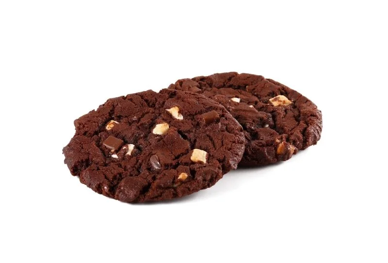
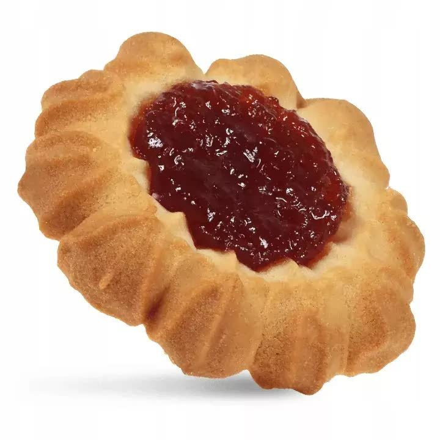
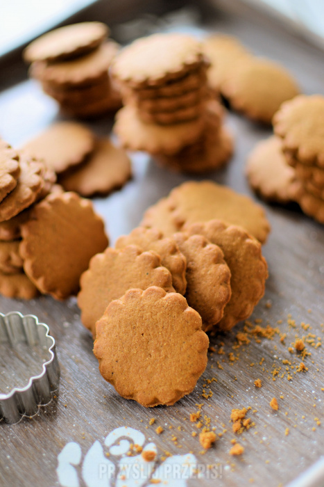
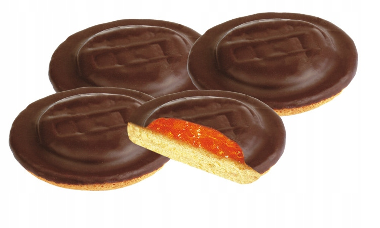

Katalog najlepszych ciastek i słodyczy!

Intensywnie kakaowe, ciemne ciasto o miękkim środku, przełamane dużymi kawałkami białej i mlecznej czekolady. Idealny wybór dla prawdziwych fanów czekolady, którzy szukają głębokiego, deserowego smaku.

Klasyczny wypiek z maślanego ciasta. W samym centrum znajduje się gęsta, owocowa marmolada o głębokim czerwonym kolorze. Idealne połączenie kruchej bazy ze słodkim, lekko ciągnącym się nadzieniem

Chrupiące ciastko z wyraźnym dodatkiem korzennych przypraw: cynamonu, imbiru oraz goździków. Charakteryzuje się ciemniejszą barwą dzięki dodatkowi brązowego cukru lub miodu. Jest intensywne w smaku i idealnie pasuje do zimowej herbaty.

Lekki, puszysty biszkopt pokryty warstwą sztywnej galaretki owocowej, wykończony kruchą taflą deserowej czekolady. Idealne połączenie trzech różnych tekstur, które daje efekt orzeźwienia i słodyczy w jednym.